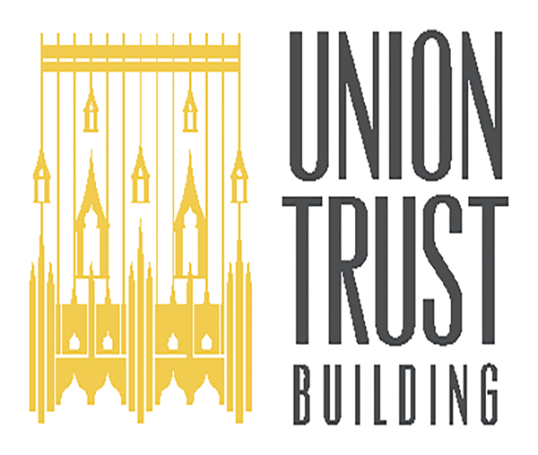
UNION TRUST BUILDING
Author: Mike Pernice, Founder · Last updated: September 2026
The Union Trust Building is a Flemish Gothic landmark at 501 Grant Street in downtown Pittsburgh, redeveloped by The Davis Companies into Class-A offices with restaurants, a tenant gym, and a 10th-floor theatre. From October 2023 into 2025, The Stoop ran its Instagram and Facebook: tenant event coverage, a social media audit, and monthly reels and stories. We also produced the quarterly tenant newsletter and branded the building’s tenant app.
The Challenge
The Union Trust Building has more to show than almost any office address in Pittsburgh: a 40-foot stained-glass dome, a 55-ton bank vault door installed in 1918, a Gothic roofline with chapels on top, and a lobby full of restaurants and tenants. Its social accounts mostly covered events. When we audited them in November 2023, they were reaching just 1.8% of the potential audience in the building’s top five cities, and had captured only 0.2% of it. The audience wanted more than events: the building itself, the people who run it, and the companies that work there.
Property management needed a partner who could do three things at once: cover tenant events the day they happen, keep a steady monthly calendar of reels and stories, and give tenants a reason to follow the building they work in.
The Strategy
Our Social Media Analysis & Strategy compared almost two years of Facebook and Instagram data and set the plan for 2024:
- Lead with Instagram Reels, set to trending audio with on-screen text, where engagement was highest
- Reshare to Facebook with captions written for its older audience
- Widen the content beyond events: building history, behind-the-scenes tours, staff, and tenant spotlights
- Post stories consistently, with polls and Q&As to start conversations
- Use both accounts as an information hub for tenants: events, amenities, and building news
- Report quarterly on reach, interactions, and follower growth
Events, Posted the Same Week
The work started with tenant events. Each one came as a set package: one to two hours of on-site coverage, two reels, and five stories, with the first story posted live while the event was still going and the rest over the following days. From late 2024 every event ran on the same monthly cycle: an announcement, a content shoot, and a recap reel and story. Coverage ran from a Harvest Party in October 2023 through holiday happy hours, makers markets, a Taste of UTB tasting with five restaurants, and a Make-A-Wish fundraiser with BNY Mellon that passed its $5,000 goal halfway through and closed at more than $8,000.
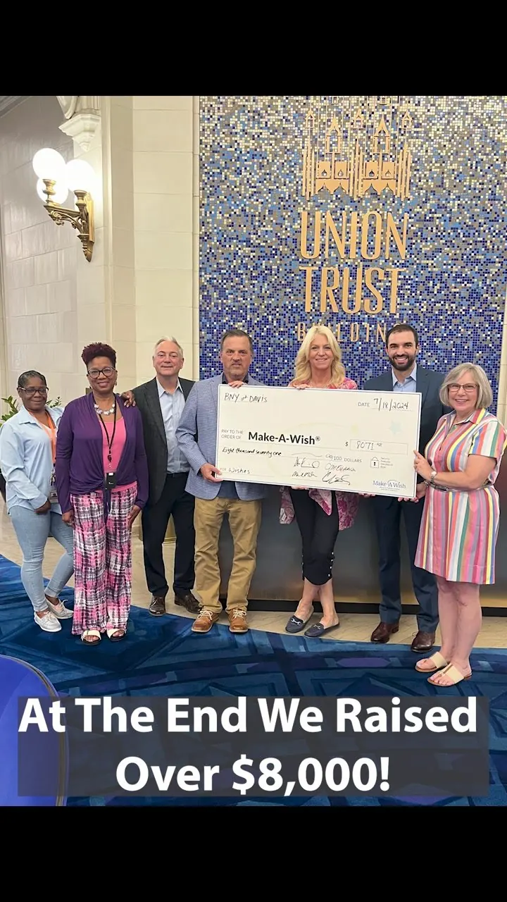
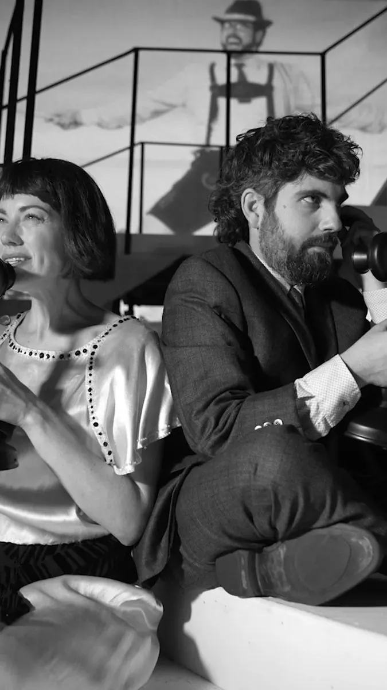
Hosting events your audience should see?
Plan Your Event CoverageA Landmark With Recurring Series
Monthly management began in December 2023 with a package of eight feed posts and eight stories a month, planned in a shared tracker and shot in regular content days around the building. The calendar ran on recurring series, so there was always a next episode: a six-part Day in the Life, History with Charles and Throwback Thursday posts on the building’s past, staff and tenant spotlights, restaurant collaborations, and building highlights from the dome to the art program.
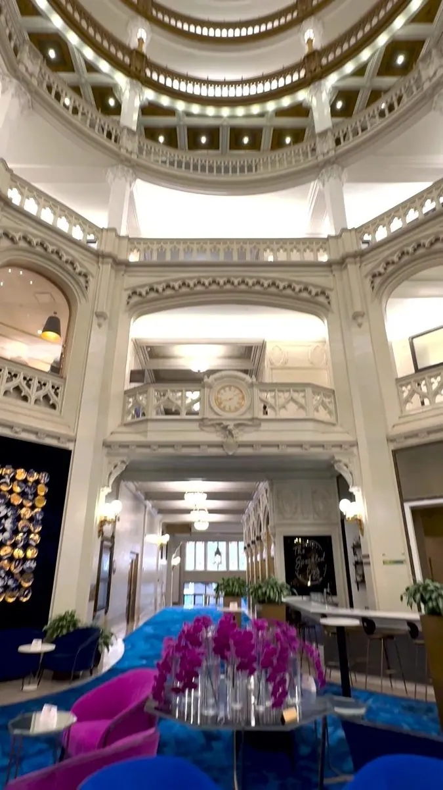
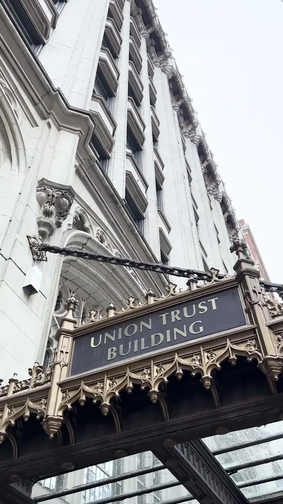
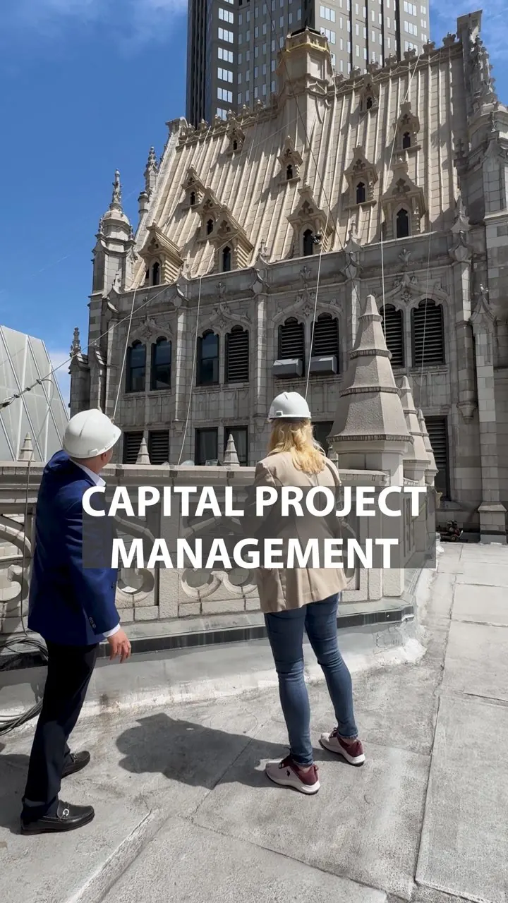
The Building
Tenants, Staff & Series Templates
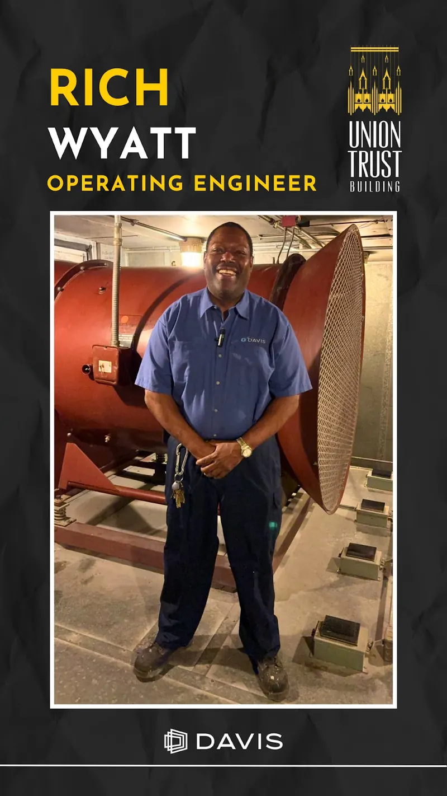
Staff Spotlight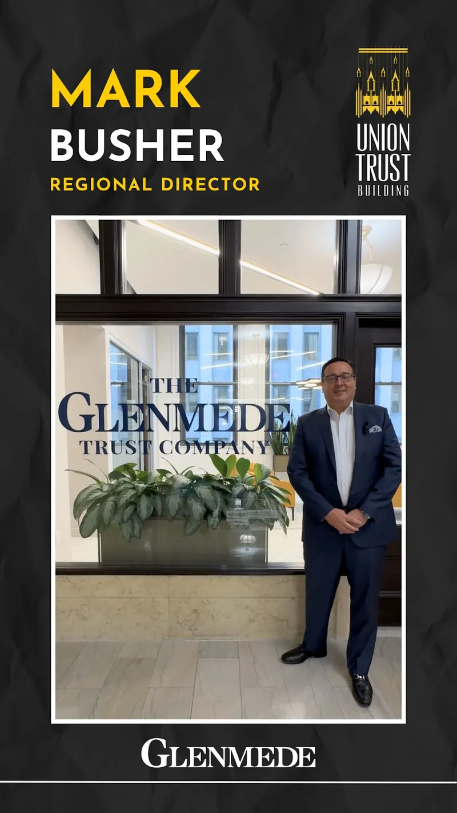
Tenant Testimonial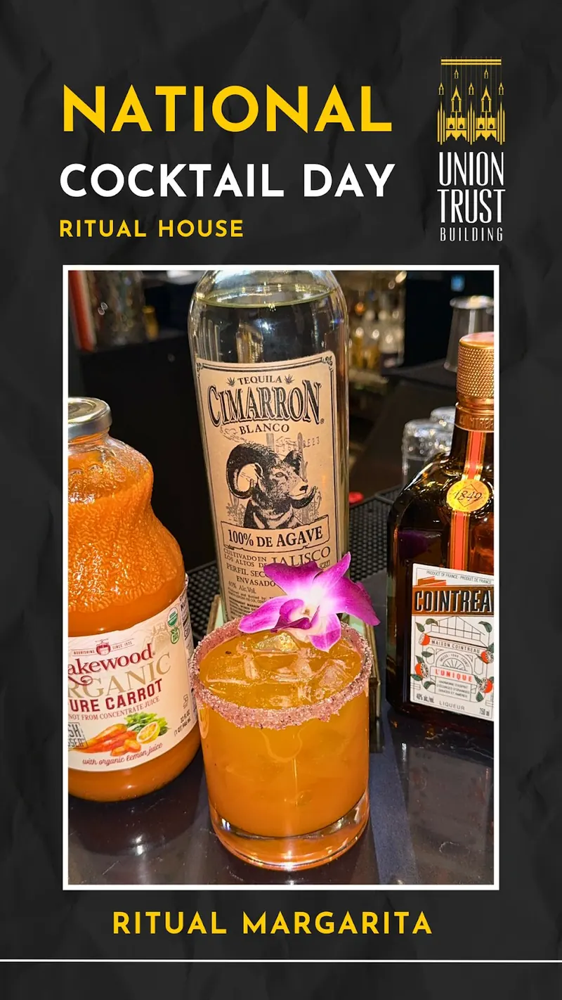
National Cocktail Day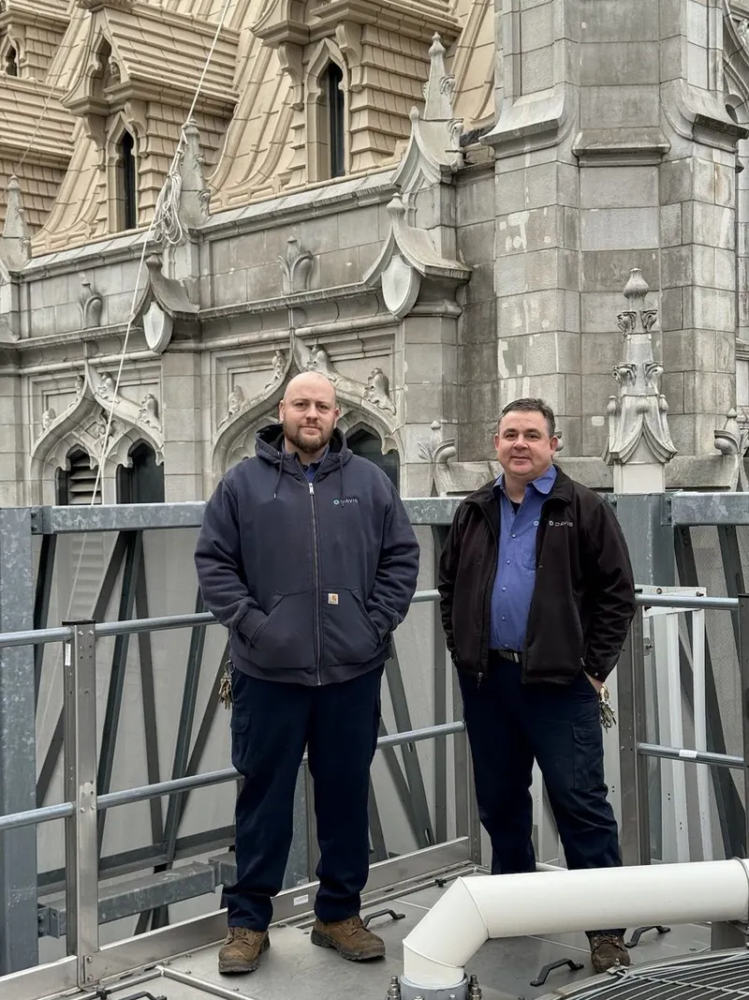
Meet the Staff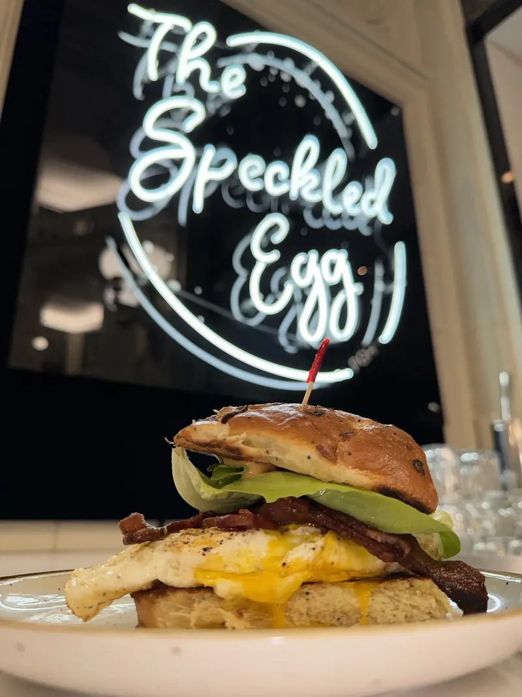
Tenant Spotlight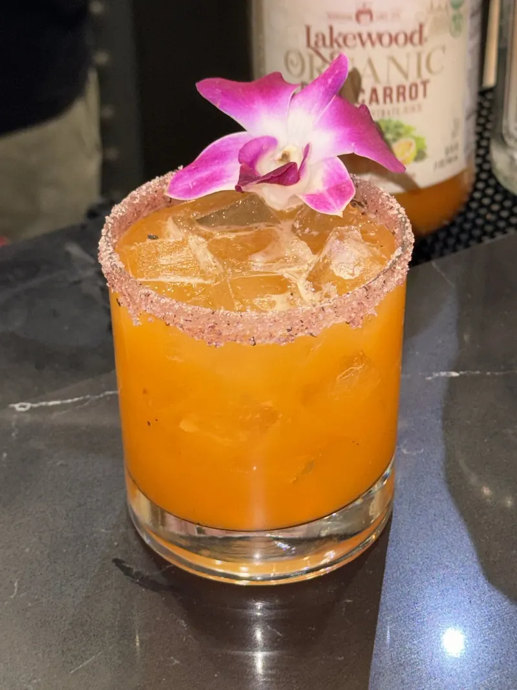
Restaurant Collab Tenant Testimonial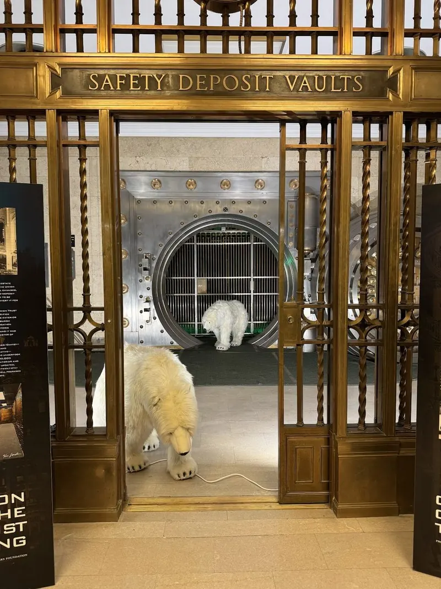
Polar Bear Day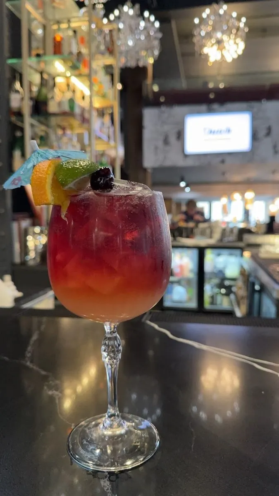
National Cocktail Day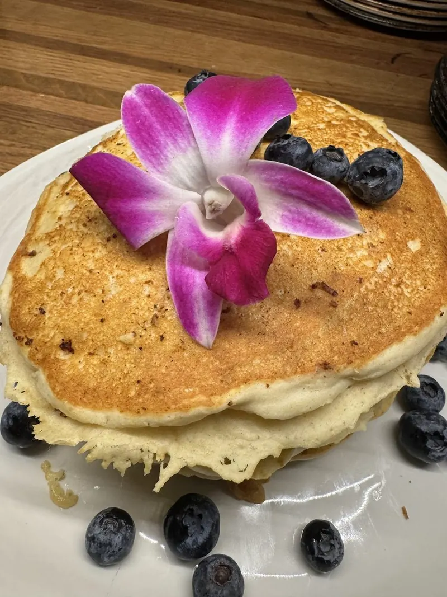
National Pancake DayWant a monthly calendar built around your own story?
Plan Your Social RetainerQuarterly Tenant Newsletter
From fall 2024 we also produced the building’s quarterly tenant newsletter, and it ran with the social calendar as one loop: each issue announced the coming season’s events, recapped the last season’s, and ran building features such as the restored chapel roof, the Pittsburgh History & Landmarks Foundation’s new vault panels, and the valet team. The recaps carried the outcomes tenants cared about: Quantum Theatre sold 2,101 tickets for its month-long run in the building’s theatre, and the March 2025 blood drive collected 19 donations, enough to help 57 local lives. Every issue sent readers back to the building’s Instagram and Facebook.
Need tenant or member communications that people read?
Talk to UsThe Building in Every Tenant’s Pocket
In March 2025 we branded the building’s tenant app on the VTS platform: a login-screen background built from a photo of the stained-glass dome, login and splash-screen versions of the Union Trust Building logo, iOS and Android app icons, and an Android notification icon, each sized to the platform’s specs. Tenants who open the app see the same building they follow on Instagram.
Need a brand that holds up down to a phone icon?
Talk Design & BrandingOur Process
Audit & Strategy
A full Facebook and Instagram audit comparing 2022 and 2023, an audience breakdown by age, interest, and city, and a 2024 plan with named goals and KPIs.
Event Packages
A fixed deliverable for every tenant event: on-site coverage, two reels, and five stories, with one story posted live and the rest scheduled over the following days.
Series & Shoot Days
Recurring series planned in a shared tracker, shot in content days around the building, with polls, Q&As, and tenant collabs built into the stories.
Quarterly Reporting
Per-post views, impressions, and engagement logged every month, and quarterly reports on reach, interactions, and follower growth for both platforms.
More Reach, More Conversation
Instagram, the platform the strategy put first, moved fastest. In the first quarter of monthly management, Instagram content interactions went from 311 to 1,100 and Facebook interactions from 166 to 630. Quarterly Instagram reach climbed from 3,052 accounts in fall 2023 to 5,900 in Q1 2024 and 8,000 in Q2, and the account crossed 1,000 followers by the end of June 2024.
The series did the heavy lifting. Day in the Life Part 1 drew 2,155 Instagram views, the vault episode of History with Charles 2,000, and a staff spotlight on engineer Dan 2,500 views on Facebook, the most of any post there.
Quarter by Quarter
- Fall 2023 (Sep 29 – Dec 27) — 3,052 IG accounts reached, 311 IG interactions, 821 IG followers
- Q1 2024 — 5,900 IG accounts reached, 1,100 IG interactions, 910 IG followers
- Q1 2024 — 630 Facebook interactions, up from 166; Facebook followers 216 → 244
- Q2 2024 — 8,000 IG accounts reached, 1,004 IG followers
- Q2 2024 — 12,700 Facebook impressions, up from 12,100 in Q1
- Dec 2023 – Mar 2025 — 49,738 Instagram and 14,111 Facebook views logged across 219 posts and stories
The full year held up. In 2024, the first full year of monthly management, Instagram reached 16,600 accounts, up from 4,200 in 2023, and drew 24,100 views, up from 6,100. Content interactions rose from 255 to 1,000 on Instagram and from 218 to 1,500 on Facebook, where reach grew from 8,000 to 11,600 accounts. Instagram followers grew from 821 at the end of 2023 to 1,057 at the end of 2024, up 29%. The Stoop took over in October 2023, so the 2023 figures already include its first three months.
2024 vs. 2023
- Instagram accounts reached — 4,200 → 16,600
- Instagram views — 6,100 → 24,100
- Instagram content interactions — 255 → 1,000
- Instagram profile visits — 1,100 → 2,900
- Facebook accounts reached — 8,000 → 11,600
- Facebook content interactions — 218 → 1,500
- Facebook page visits — 1,600 → 2,500
- Instagram followers — 821 → 1,057 (+29%)
- Facebook followers — 216 → 271 (+25%)
Read the full breakdown on the blog: Social media for a historic office building · The tenant event content playbook
Questions About This Project
What results did the Union Trust Building see? +
Instagram followers grew from 821 to 1,004 (+22%) between the end of 2023 and the end of Q2 2024, and quarterly Instagram reach grew from 3,052 to 8,000 accounts over the same span. Instagram content interactions rose from 311 to 1,100 quarter over quarter after monthly management began. Across all of 2024, compared with 2023, Instagram accounts reached grew from 4,200 to 16,600, Instagram views from 6,100 to 24,100, and Instagram followers from 821 to 1,057 (+29%).
What did the engagement include? +
Tenant event coverage with a set package of reels and stories per event, a social media audit and strategy, monthly Instagram and Facebook management with recurring video series, community management, quarterly analytics reporting, a quarterly tenant newsletter, and brand assets for the building’s tenant app.
What is the Union Trust Building? +
The Union Trust Building is a Flemish Gothic landmark at 501 Grant Street in downtown Pittsburgh, designed by Frederick Osterling for Henry Clay Frick and listed in the National Register of Historic Places in 1974. The Davis Companies redeveloped it as a Class-A historic office building in 2017.
Have a building with a story to tell?
Let's put it in front of the people who work there.


{kind=link}
{kind=link}
{kind=link}
{kind=link}
{kind=link}
{kind=link}
{kind=link}
{kind=link}
{kind=link}
{kind=link}
{kind=link}
{kind=link}
{kind=link}
{kind=link}
{kind=link}
{kind=link}
{kind=link}
{kind=link}
{kind=link}
{kind=link}
{kind=link}
{kind=link}
{kind=link}
{kind=link}
{kind=link}
{kind=link}
{kind=link}
{kind=link}
{kind=link}
{kind=link}
{kind=link}
{kind=link}
{kind=link}
{kind=link}